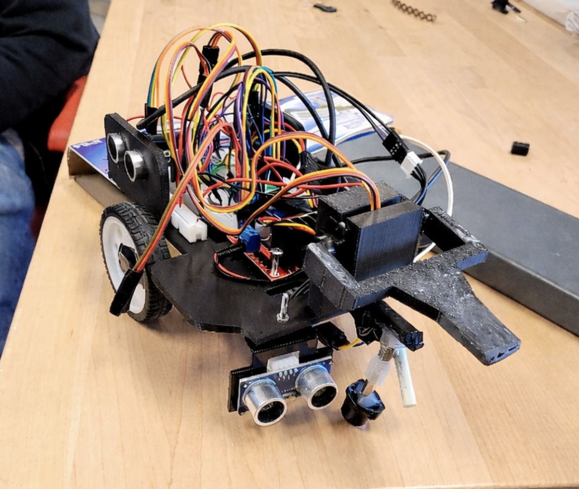

A team-built autonomous robot created to identify, transport, and return payloads using mechanical design, sensor integration, and navigation logic.

This project was completed as part of a four-person engineering team focused on designing and building a fully autonomous payload delivery robot. The goal was to develop a system that could independently locate payloads, transport them across the course, and return to its base without manual control.
My contribution involved supporting both the mechanical and systems side of the build. This included helping develop the robot structure, contributing to subsystem integration, and participating in the testing process that connected the hardware with the sensing and control logic.
A major part of the project was iterative improvement. Early versions exposed issues in movement consistency, object interaction, and sensor reliability, so the design evolved through repeated testing, troubleshooting, and refinement. This made the project a strong experience in real engineering problem solving rather than just initial concept design.
Overall, the project strengthened my understanding of robotics, subsystem coordination, and collaborative engineering development while giving me hands-on experience building a complete working system.